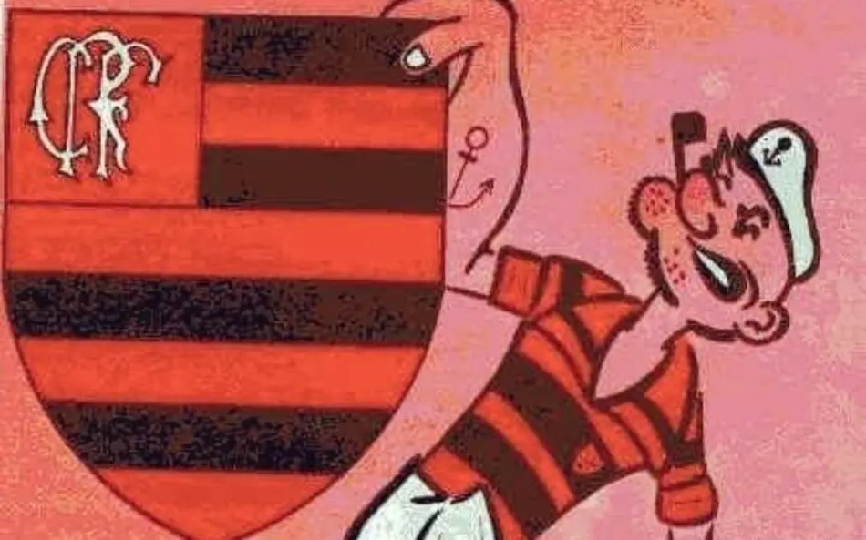
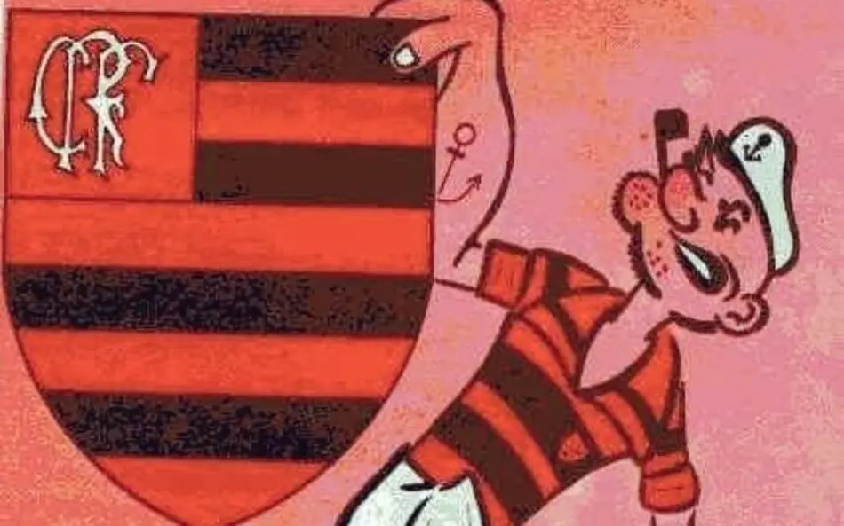

MASCOTE DO FLAMENGO
O mascote oficial do Flamengo é o urubu, mas a história do clube teve um primeiro mascote, o marinheiro Popeye, criado em 1944.
A adoção do urubu como símbolo aconteceu após torcidas rivais usarem o animal de forma pejorativa para ofender os flamenguistas.
Em 1º de junho de 1969, torcedores levaram um urubu ao Maracanã e o soltaram durante uma partida contra o Botafogo, que o time venceu, transformando o símbolo de ofensa em um ícone de garra e resistência.
Em 1944, o cartunista do Jornal dos Sports, Lorenzo Molas, desenhou o marinheiro Popeye como símbolo do Flamengo, devido à sua ligação com o mar e sua força para sair de situações difíceis.
A associação com Popeye se fortaleceu quando o Flamengo conquistou o tricampeonato estadual de forma heroica naquele ano, com o marinheiro ajudando a ressignificar a torcida como a força que o time tinha.
 
